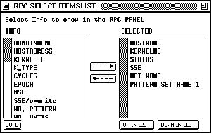

The batch language is able to recognize the following data types:
The creation of float numbers is similar to a creation of such numbers in the language C because they both use the exponential representation. Float numbers would be: 0.42, 3e3, or 0.7E-12. The value of 0.7E-12 would be and the value of 3e3 would be

Boolean values are entered as shown above and without any kind of modification.
Strings have to be enclosed by " and can not contain the tabulator character. Strings also have to contain at least one character and can not be longer than one line. Such strings could be:
"This is a string"
"This is also a string (0.7E-12)"
The following example would yield an error
"But this
is not a string"